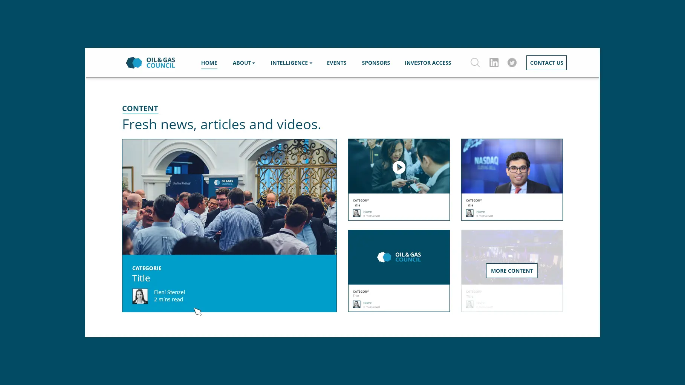
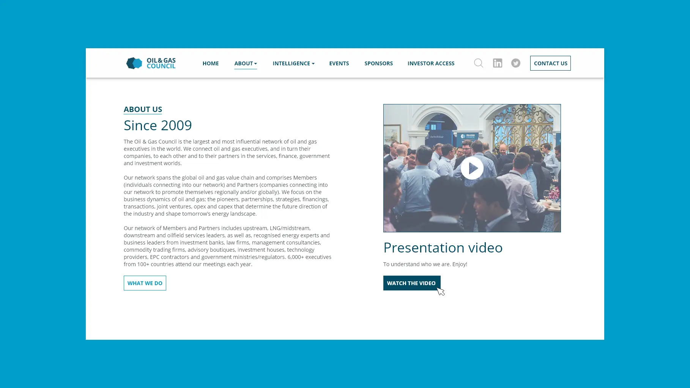
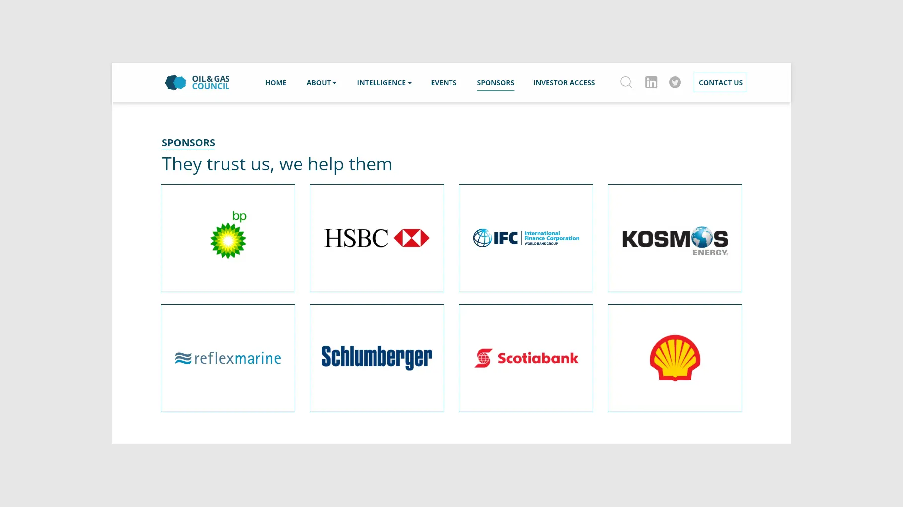
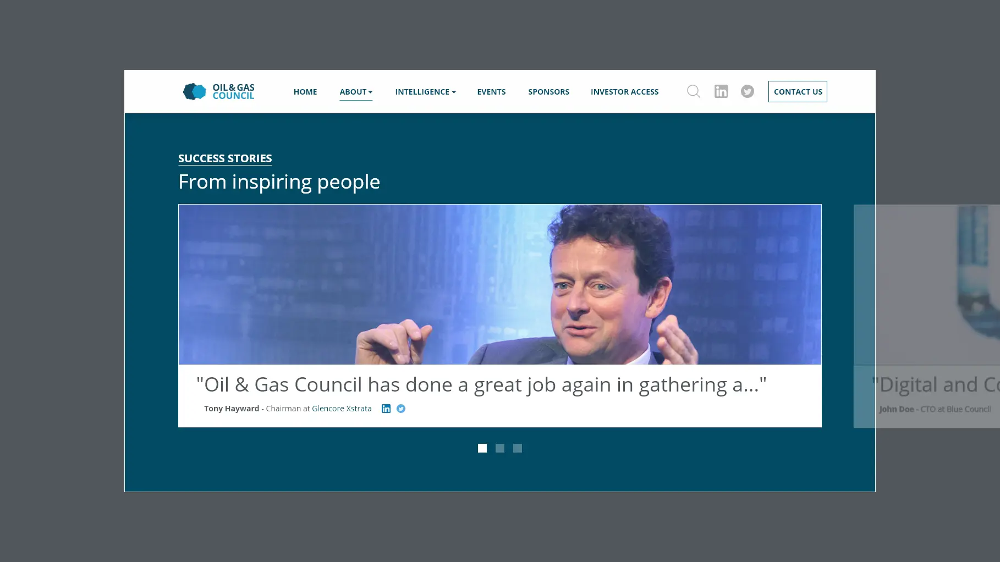

Oil and Gas Council
Webdesign & Motion 2D
During 4 months I got the opportunity to work for the largest oil and gas network in the world, directly from the South African branch of the company based in London.
My main mission was to review the User Interface of the new website while adapting it to smartphones and tablets via Wordpress: the old website had not been developed with a responsive-language. Moreover I also worked on web content (banners for Linkedin, Facebook), print documents (Flyers, Editions) and a motion video about the value chain of O&GC.
Also, being the only foreigner in a South African team helped me to improve my English.
Year
From September to December 2017
Lire en Français 🇫🇷